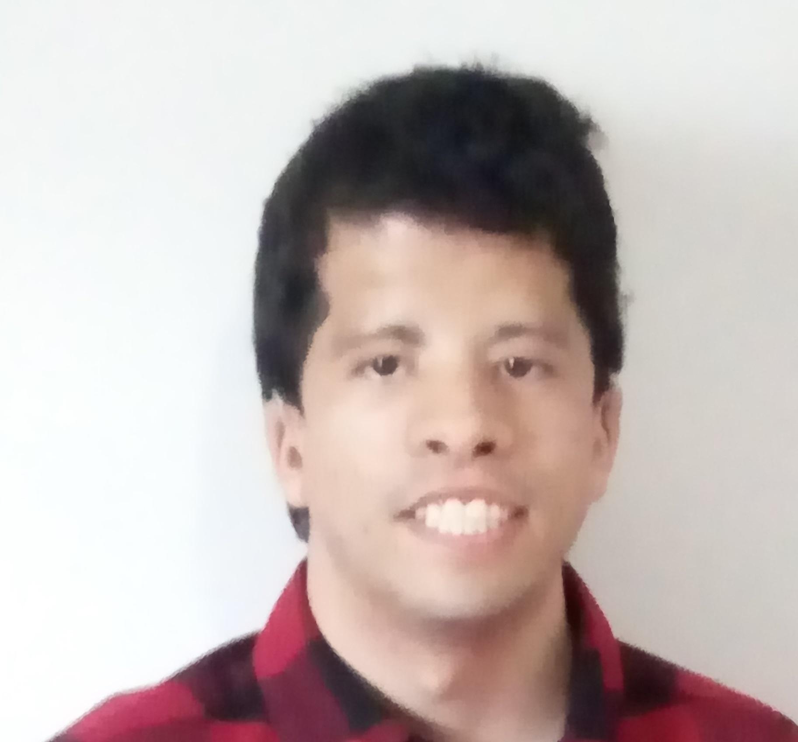

<nav class="navbar navbar-expand-lg navbar-light bg-secondary">
    <div class="container-fluid">
      <button class="navbar-toggler" type="button" data-bs-toggle="collapse" data-bs-target="#navbarSupportedContent" aria-controls="navbarSupportedContent" aria-expanded="false" aria-label="Toggle navigation">
        <span class="navbar-toggler-icon"></span>
      </button>
      <div class="collapse navbar-collapse" id="navbarSupportedContent">
        <ul class="navbar-nav m-auto d-flex align-items-center">
          <li class="nav-item">
            
          </li>
          <li class="nav-item pl-3">
            <p class="m-0 font-weight-bold text-yellow fs-16">Lorrans Facca</p>
          </li>
          <li class="nav-item pl-3">
            <p class="m-0 font-weight-bold text-yellow fs-16">
            Meu Nome é Lorrans Tenho 31 anos,                                                                                                                                                                                                                                                                           
            nasci em  São Paulo moro em Barueri,                                                                                                                                                                                                                       
            Fiz vários cursos no Senai entre eles:  desenho mecânico,                                                                                                            
            desenho arquitetônico autocad 2D/3D, web designer e no Senac sketchup.                                                                                                                        
            A Programação entrou na minha vida porque tive uma curiosidade                                             
            de como são feitos os sites , tive uma oportunidade de fazer o curso                            
            de programação web em python na escola Mastertech.                                                                                                                                                                                        
            Prestei o enem,  entrei no Instituto Federal de São Paulo(IFSP)
            estou no terceiro semestre do curso de Desenvolvimento e Análise de Sistemas,
            possuo deficiência auditiva de grau leve / moderada uso aparelho auditivo,
            minha deficiência não me impede de mostrar meu potencial e consigo executar 
            minhas atividades profissionais normalmente. Acredito que o curso que estou fazendo na Generation
            está me direcionando para alcançar meus objetivos para ingressar no mercado de trabalho  na área de Tecnologia.
            </p>
          </li>

          <li class="nav-item pl-3">
            <a href="">
              <p class="text-yellow fs-16 m-0"><i class="fa fa-pencil-square-o" aria-hidden="true"></i>
            </a>
            <i class="fa fa-deaf" aria-hidden="true"></i></p>
          </li>
        </ul>
        <ul class="navbar-nav ml-auto d-flex align-items-center">
          <li class="nav-item pl-3">
            <a class="m-0 font-weight-bold text-yellow fs-16">Sair</a><i class="fa fa-sign-out" aria-hidden="true"></i>
          </li>
        </ul>
      </div>
    </div>
  </nav>
